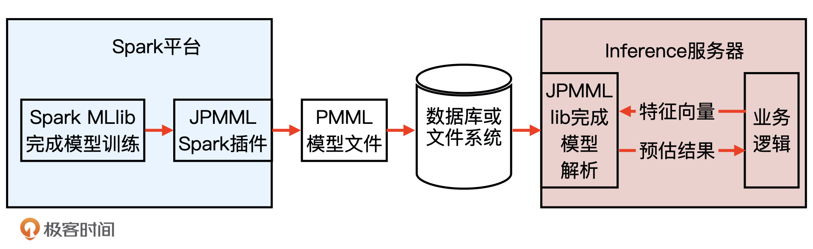
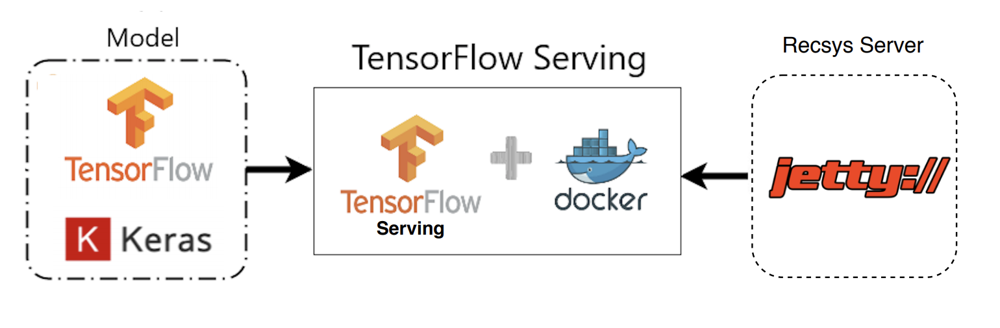

模型服务
Contents
模型服务#
在生产环境中，模型需要在线上运行，实时地根据用户请求生成模型的预估值。
这个把模型部署在线上环境，并实时进行模型推断（Inference）的过程就是模型服务。
业界主流的模型服务方法有4种，分别是预存推荐结果或者embedding结果、预训练embedding + 轻量级线上模型、PMML模型以及Tensorflow Serving。
预存推荐结果或者embedding结果#
对推荐系统线上服务来说，最简单直接的线上模型服务方法就是在离线环境下生成对每个用户的推荐结果，然后将结果预存到以redis为代表的线上数据库中。这样，我们在线上直接取出预存给用户的结果就可以了。
优点：
无需事先模型线上推断，线上线下完全解耦，线上服务过程没有复杂的计算，延迟极低
缺点：
需存储 用户$\times$物品$\times$场景 组合推荐结果，可能组合爆炸无法存储；且无法引入线上场景类特征
预训练embedding + 轻量级线上模型#
预存embedding然后进行相似度计算，这其实就类似于矩阵分解模型，缺点是太简单表达能力受限。
因此可以用一个轻量级的线上模型代替相似度计算（如向量內积），即：
1.用复杂深度学习网络离线生成embedding，存入redis等内存数据库。
2.再在线上实现逻辑回归或者浅层神经网络等轻量级模型拟合目标
利用PMML转换和部署模型#
虽然embedding + 轻量级模型的方法即实用又高效，但它还是把模型进行了割裂，让模型不完全是end2end这种最“完美”的方式。那有没有能够在离线训练完模型之后什么都不用做，直接部署模型的方式呢？PMML（预测模型标记语言 Predictive Model Markup Language）就可以。

1.在离线训练好模型后，对模型序列化，生成PMML模型文件，存储到数据库或文件系统。
2.在服务端，Server完成PMML模型的解析，生成预估模型，进行推断。
Tensorflow Serving#
对于用Tensorflow实现的复杂的深度学习模型，PMML语言表示能力有限无法胜任，这是就需要Tensorflow Serving。
Tenforflow Serving的工作流程和PMML类工具的流程一致：
1.Tensorflow在离线把模型序列化，存储到文件系统。
2.Tenforflow Serving把模型文件载入到模型服务器，还原模型推断过程，对外以HTTP接口等方式提供模型服务。

上面是使用tenforflow.keras完成模型的构建和训练
再利用Tensorflow Serving把模型文件载入到模型服务器，用Docker作为服务容器
最后在jetty推荐服务器中发出HTTP请求到Tensorflow Serving，获得模型推断结果，推荐服务器利用这一结果完成推荐排序。
搭建Tensorflow Serving服务#
总的来说，搭建服务分三步，分别是安装Docker，建立Tensorflow Serving服务，以及请求Tensorflow Serving获得预估结果。
建立Tensorflow Serving服务#
首先利用Docker命令拉取Tensorflow Serving镜像：
# 从docker仓库中下载tensorflow/serving镜像
docker pull tensorflow/serving
然后，再从Tensorflow的官方Github地址下载一个Tensorflow Serving相关的测试模型文件
# 把tensorflow/serving的测试代码clone到本地
git clone https://github.com/tensorflow/serving
# 指定测试数据的地址
TESTDATA="$(pwd)/serving/tensorflow_serving/servables/tensorflow/testdata"
最后，我们在Docker中启动一个包含Tensorflow Serving的模型服务容器，并载入我们刚才下载的测试模型文件half_plus_two
# 启动TensorFlow Serving容器，在8501端口运行模型服务API
docker run -t --rm -p 8501:8501 \
-v "$TESTDATA/saved_model_half_plus_two_cpu:/models/half_plus_two" \
-e MODEL_NAME=half_plus_two \
tensorflow/serving &
在命令执行完成后，若在Docker的管理界面中看到了Tensorflow Serving容器，就证明Tensorflow Serving服务被成功建立起来了
请求Tensorflow Serving获得预估结果#
验证一下能否通过HTTP请求从Tensorflow Serving API中获得模型的预估结果。
使用curl命令发送HTTP POST请求到Tensorflow Serving的地址：
# 请求模型服务API
curl -d '{"instances": [1.0, 2.0, 5.0]}' -X POST http://localhost:8501/v1/models/half_plus_two:predict
若看到如下的返回结果，就说明Tensorflow Serving建立并预测成功
# 返回模型推断结果如下
# Returns => { "predictions": [2.5, 3.0, 4.5] }
在实践中，只需将测试模型更改为我们的推荐模型即可
线上特征处理#
要使用模型服务，比如说Tensorflow Serving，前提是我们需要根据当前的请求，生成模型可接收的输入。
这个过程就是线上特征处理，它可能包括一些连续特征的归一化，分桶等，也包括请求数据库已存储的信息。
具体来说，特征分为静态特征和动态特征。
1.对于静态特征，比如说 id2embedding 的数据，基本长时间不会变更，这块直接从特征池（比如说Redis）里取。
2.对于动态特征，我们需要在推荐服务器内部做一些必要的预处理，最后拼接起来，生成模型可接收的输入。
这样把部分特征处理放到推荐服务器内而非模型里，可以减轻Tensorflow Serving的负担，降低延迟。